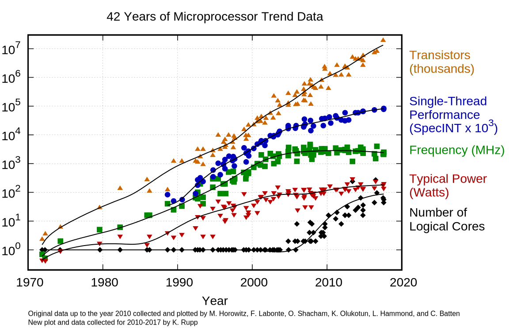

Parallel Computing
Contents
Parallel Computing#
General thoughts#
Parallel computing is a programming method that harnesses the power of multiple processors (typically CPU cores) at once.
There are many types of parallelism, some of which are (from micro to macro)
Instruction level parallelism (e.g. SIMD)
Multi-threading (shared memory)
Multi-processing (shared system memory)
Distributed processing (typically no shared memory)
Import note before we start: At the center of an efficient parallel code is a fast serial code!!
Why Go Parallel?#
Interesting video on the topic of “The Future of Microprocessors” https://www.youtube.com/watch?v=zX4ZNfvw1cw (coincidentally from Juliacon :P)
When to Go Parallel?#
If parts of your (optimized!) serial code aren’t fast enough.
There are costs: parallelization typically increases the code complexity
If your system has multiple execution units (CPU threads, GPU threads, …).
Import on supercomputers, but also on modern desktop computers and laptops
What Do I Have?#
using Hwloc
Hwloc.num_physical_cores()
24
Note that there may be more than one CPU thread per physical CPU core (e.g. hyperthreading).
Sys.CPU_THREADS
48
What does Maxwell Have?#
The Maxwell Infrastructure page summarises the hardware:
Compute Hardware |
Infiniband Hardware |
Storage |
|||
|---|---|---|---|---|---|
CPU+GPU nodes |
798 |
root switches |
6 |
GPFS exfel |
~40 PB |
Total number of cores with hyperthreading |
61696 |
top switches |
12 |
GPFS petra3 |
~20 PB |
Total number of PHYSICAL cores |
30898 |
leaf switches |
42 |
BeeGFS desy |
1.5 PB |
Theoretical CPU peak performance |
1074 TFlops |
IB cables (#) |
>1432 |
BeeGFS cssb |
3.2 PB |
Total RAM |
420 TB |
IB cables (length) |
>7.6km |
||
GPU nodes |
180 |
||||
Total number of GPUs |
379 |
||||
Theoretical GPU peak performance |
2330 TFlops |
||||
Total peak performance |
3404 TFlops1 |
There are two main kinds of nodes on Maxwell:
HT Cores |
Cores |
CPUs |
CPU |
|---|---|---|---|
~160 |
~20 |
2x |
Intel E5-2698 |
256 |
64 |
2x |
AMD EPYC 7542 |
Note that:
Few different types of Intel CPUs, between 18 and 20 cores/cpu
Hyperthreaded cores = 2 (physical CPUs) * 64 (cores/CPU) * 2 (threads/core) = 256 HT Cores for EPYC, similar for Intel
Even if you only use a single node you have access to 128 CPU cores (64 per CPU). Hence, if you would use only a single core, the node utilization would be less than 1%.
Amdahl’s Law#
Naive strong scaling expectation: I have 4 cores, give me my 4x speedup! However that is not the case:
The overall performance improvement gained by optimizing a single part of a system is limited by the fraction of time that the improved part is actually used
More formally:
If \(p\) is the fraction of a code that can be parallelized than the maximal theoretical speedup by parallelizing on \(n\) cores is given by $\( F(n) = 1/(1-p + p/n) \)$
using Plots
F(p, n) = 1 / (1 - p + p / n)
pl = plot()
for p in reverse(sort(vcat(0.2:0.2:1, [0.9, 0.95])))
plot!(pl, n -> F(p, n), 1:16, lab="$(Int(p*100))%", lw=2,
legend=:topleft, xlab="number of cores", ylab="parallel speedup", frame=:box)
end
pl
Parallel Computing in Julia#
Julia provides support for all types of parallelism mentioned above (same order)
@simd, SIMD.jl, LoopVectorization.jlThreads.@threads,Threads.@spawn, FLoops.jl, ThreadsX.jl …@spawnat,@fetch,RemoteChannel,SharedArray@spawnat,@fetch,RemoteChannel, DistributedArrays.jl, MPI.jl
With supercomputing in mind, we will start by focusing on multi-process parallelism which allows us to utilize multiple cores on the same or different nodes/machines (distributed computing).
But before we do, it’s instructive to take a closer look at tasks.
Tasks#
By default, Julia waits for every command to finish (”blocking”) and run everything sequentially.
Tasks are a control flow feature that allows computations to be suspended and resumed in a flexible manner to implement cooperative multitasking. (This feature is sometimes called by other names, such as coroutines, green-, or lightweight threads.)
Tasks are managed by Julia and can be run in a concurrent fashion.
Concurrency means executing multiple tasks at the same time but not necessarily simultaneously.
An important use case is asynchronous I/O, which is typically slow. Examples are:
multiple user input (Why not already process some of the input?)
data dumping to disk (Maybe it’s possible to continue a calculation?)
receiving calculations from worker processes
@async and @sync#
We can create and schedule a task for asynchronous execution with the @async macro.
What this means is that for whatever falls into its scope, Julia will start a task to then proceed to whatever comes next in the script without waiting for the task to complete (”non-blocking”).
@time sleep(2);
2.000862 seconds (66 allocations: 1.688 KiB)
@time @async sleep(2)
0.012212 seconds (12.74 k allocations: 724.993 KiB, 53.87% compilation time)
Task (runnable) @0x00007f8ec4db12c0
Julia allows the script to proceed (and the @time macro to fully execute) without waiting for the task (in this case, sleeping for two seconds) to complete.
We can use the partner macro @sync to synchronize, that is wait for all encapsulated tasks. (see ?@sync).
@time @sync @async sleep(2)
2.018049 seconds (811 allocations: 46.063 KiB, 0.89% compilation time)
Task (done) @0x00007f8eafe41430
Of course, here it doesn’t make much sense to write @sync @async - we could simply drop it altogether. A better example is the following.
@time @sync begin
@async sleep(2.0)
@async sleep(2.0)
end
2.005250 seconds (1.03 k allocations: 63.416 KiB, 0.21% compilation time)
Task (done) @0x00007f8eafe41e40
A = rand(1000, 1000)
B = rand(1000, 1000)
@time t = @async A * B;
0.000065 seconds (32 allocations: 2.148 KiB)
@time A * B;
0.012130 seconds (2 allocations: 7.629 MiB)
wait(t)
fetch(t)
1000×1000 Matrix{Float64}:
251.227 260.736 259.512 255.118 … 265.802 248.578 254.68 256.749
239.056 249.929 245.461 245.267 246.204 235.374 238.392 246.51
250.156 256.235 262.714 254.409 259.868 243.649 247.781 257.38
238.703 249.144 251.91 247.845 252.284 233.832 236.001 251.144
247.563 252.364 256.756 252.737 248.212 237.178 238.494 247.611
251.03 262.196 263.404 258.77 … 258.135 245.969 250.906 262.044
245.881 247.229 249.466 254.335 251.519 241.021 240.248 251.509
239.177 254.725 251.597 247.423 254.867 239.108 243.191 247.311
242.562 251.673 254.265 248.943 254.717 236.701 240.407 252.59
237.121 249.528 252.028 247.476 248.637 238.063 239.744 244.09
250.735 253.694 259.403 252.126 … 263.0 236.995 249.058 255.549
241.743 245.02 251.59 245.144 250.504 241.986 242.218 254.669
242.47 252.945 251.416 247.651 248.537 240.868 240.528 256.444
⋮ ⋱
245.338 256.465 258.023 253.54 255.232 239.656 246.433 249.67
243.681 253.031 256.69 255.451 255.013 239.314 242.998 253.036
242.115 249.416 254.989 253.077 … 250.37 239.385 243.714 251.449
245.733 257.466 260.173 254.909 262.988 241.957 245.714 256.698
245.562 257.363 255.926 253.865 255.307 243.291 244.269 250.139
255.507 261.683 262.275 259.922 266.299 246.437 252.156 258.814
239.892 254.217 255.454 249.503 253.837 238.121 237.577 252.802
245.049 252.732 256.281 249.84 … 255.621 241.694 248.631 250.756
249.55 260.653 261.914 249.54 258.547 243.586 248.722 259.854
247.194 261.258 258.801 252.731 256.4 245.783 249.013 254.395
245.415 251.312 254.345 250.555 255.92 245.139 238.228 250.447
252.399 259.1 263.069 256.273 257.411 239.395 241.122 257.062
function io_bound_task()
sleep(5.0)
return true
end
io_bound_task (generic function with 1 method)
@time my_io_bound_task = @async io_bound_task()
@time fetch(my_io_bound_task)
0.000039 seconds (30 allocations: 2.070 KiB)
4.986094 seconds (254 allocations: 13.031 KiB)
true